In the 10th century, the Buddhist monk Kūya sang and danced the Nembutsu (mantra) together with ordinary people, bringing peace to the spirits of the dead. In the 13th century, the monk Ippen transformed this “Dancing Nembutsu” into a major spiritual movement, with large gatherings where people danced themselves into a trance.
Odori (Dancing) Nembutsu gave rise to Bon Odori, the summer dances welcoming the spirits of the ancestors, and also influenced the development of Noh and Kabuki. In this sense, Odori Nembutsu lies at the very roots of Japanese culture.
What Is Aminadabu?
Aminadabu is a band made up of Buddhist monks from Wada Temple and Tao Shiatsu Healers, led by Pure Land Buddhist priest Ryokyu Endo.
Ryokyu has released six albums on major Japanese record labels, and his music has been featured on television and radio in Japan and abroad.
Aminadabu has performed at the Glastonbury Festival in the UK, as well as in Europe, the Middle East, India, Thailand, Taiwan, Korea, and other parts of the world.
Wada Temple is also known for its intensive Buddhist practices, including week-long retreats in which participants chant the musical Nembutsu continuously for twelve hours a day, as well as winter waterfall practice accompanied by Buddhist chanting.
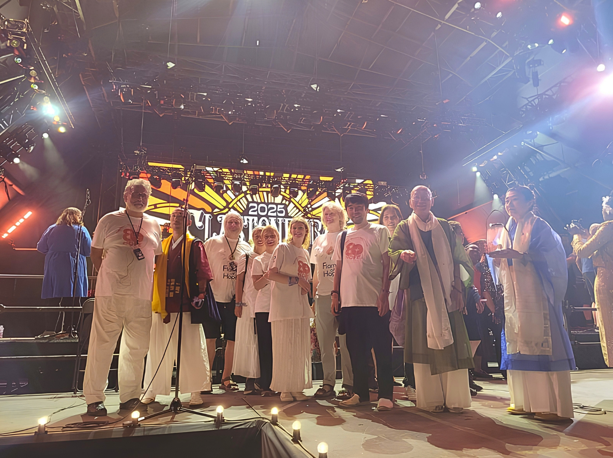
At the Pyramid Stage, Glastonbury Festival 2025
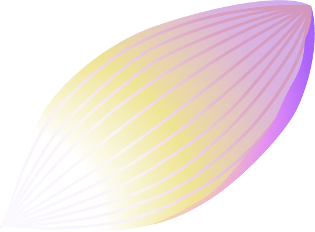
01THE LIVE
A festival of light and sound, unleashed by Buddhist monks and Tao Shiatsu healers
Following in the footsteps of Ven. Kūya, we bring peace to wandering spirits. Following the path of Ven. Ippen, we invite everyone into the ecstasy of the Pure Land!
“When I arrived at the venue, my mind was full of work, deadlines, and all the worries I had brought with me from Bangkok.
But after the music began and I had been listening for a while, I suddenly realised something... all the noise in my head was gone.
People around me began to stand up and move to the music, and before long, everyone was holding hands. Before I knew it, I was part of the circle too.
The boundary between ‘me’ and everyone else gradually began to dissolve. I felt as though I was melting into the people around me.
At that moment, it felt as if everyone there was moving together on the same wavelength.
And when it was over, I felt strangely, deeply fulfilled.
I found myself wishing that more people could experience this feeling.”
“The heaviness inside me melted away into the music.”
“Before it began, I was feeling a little restless, but as soon as the music started, the heaviness inside me gradually began to melt away. By the end, both my mind and body felt incredibly light.”
— Member of the Audience, Nagano / Japan
Account 02
The Effects of “Healing Water” Created at the Live Performance
Kaori Kanazawa — Tokyo
“The live performance created an extraordinary space, as if a doorway to another dimension had opened.
The music itself felt like a form of healing to me, so I brought some water and placed it in front of the stage, hoping it would absorb the energy of the performance.
After the concert, I drank the water. To me, it seemed to have transformed into something like amrita — the heavenly nectar known in Buddhism as the “nectar of immortality.” It tasted genuinely sweet and astonishingly gentle.
I shared the water with my family. My bedridden father, who had been very withdrawn and unyielding, became calmer, while my mother, who had been suffering from pain, began to smile.
My husband, who had been troubled by what we understood as spiritual disturbances, also looked brighter and more at ease. And for the first time in months, I was able to sleep deeply through the night.
That day, I felt as though prayer had become sound, light, and energy, embracing everyone in the venue.”
“It felt as though I were in a dream.”
“I was surrounded by warm harmonies, and felt as free and at ease as a dolphin swimming through the ocean. It was amazing — I was simply listening to the music, yet I could feel something inside me beginning to change.”
— Member of the Audience, Tohoku Tour
Account 03
“The Sound Opened a Door to the Spirit World”
Miwa Tamamoto — based in the Netherlands
Aminadabu was performing at Europe’s largest Buddhist stupa, just outside Vienna. As I listened deeply to the music,
suddenly, a spirit world appeared before me at the centre of the stupa. I saw the bodies of people who had been massacred in the Balkans, piled high, almost to the ceiling.
Then a tremendous wave of sound swept through the space. In the next instant, an immense pillar of light burst upward from beneath the floor like a giant firework.
It shot through the 32.5-metre-high ceiling, carrying many of the dead with it, and disappeared far into the heavens.
Then I became aware of the spirit of a man. He appeared and sat down in front of me. He was listening to the music with his whole being. When the song “Twelve Lights” began, he said: “If I listen to this, I will go to the Pure Land…”
Eventually, he transformed into a white bird and took flight. After circling several times, he disappeared into the heavens. I knew then that he had found peace.
“My Past Life, This Life, and the Next Became One”
“The live performance was an extraordinary experience in which my past life, this life, and the life to come all seemed to merge into one, beyond time and space. I had never experienced anything like it in my life.”
— Erina, Member of the Audience, Nagano / Japan
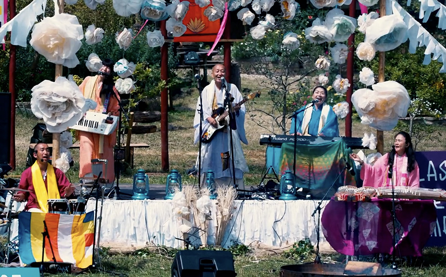
BEYOND THE BAND
On the Aminadabu stage, one flame is always kept burning.
03FLAME OF HOPE
What Is the “Flame of Hope” Burning on Stage?
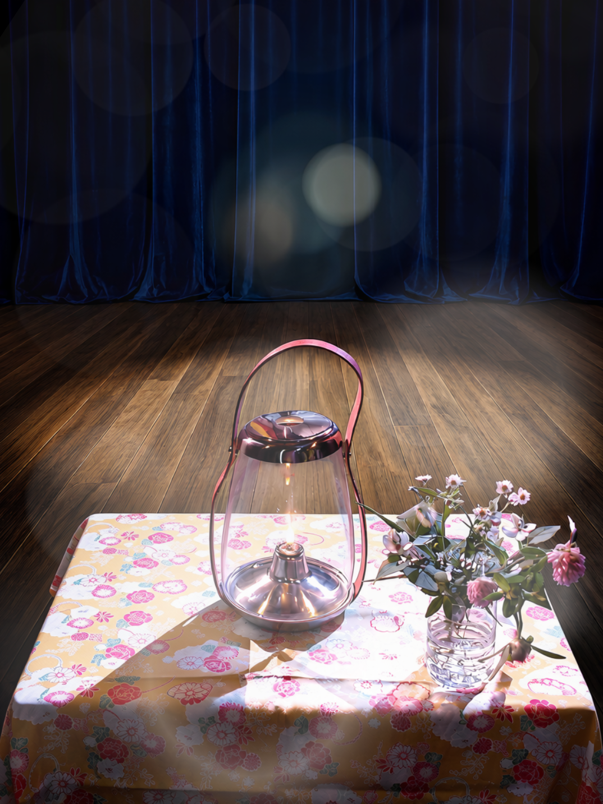
While carrying out humanitarian work in Palestine, Aminadabu’s leader, RYOKYU, visited a nine-year-old boy who had lost both legs in the bombing of Gaza.
He stood there, unable to do anything but weep and hold the boy in his arms. It was from the profound pain he felt at that moment that the Flame of Hope was born.
Today, the Flame of Hope unites 17 sacred flames from around the world into one.
It also carries the prayers of nearly 700,000 people, including Pope Francis, Pope Leo, and His Holiness the Dalai Lama.
＊The Flame of Hope burns eternally in Lumbini, the birthplace of the Buddha. ＊Flame of Hope International is an NGO in Special Consultative Status with the United Nations Economic and Social Council (ECOSOC).
Aminadabu lights the Flame of Hope on stage and, together with people around the world, prays, chants mantras, sings and dances — in the hope of changing the world...
01Write your wish on a piece of paper and offer it to the Flame of Hope near the stage. ♥︎ When you feel inspired, hold that wish in your heart and join us in singing mantras and dancing!
The power to fulfil your wish will dwell within that paper. Your wish will surely come true!
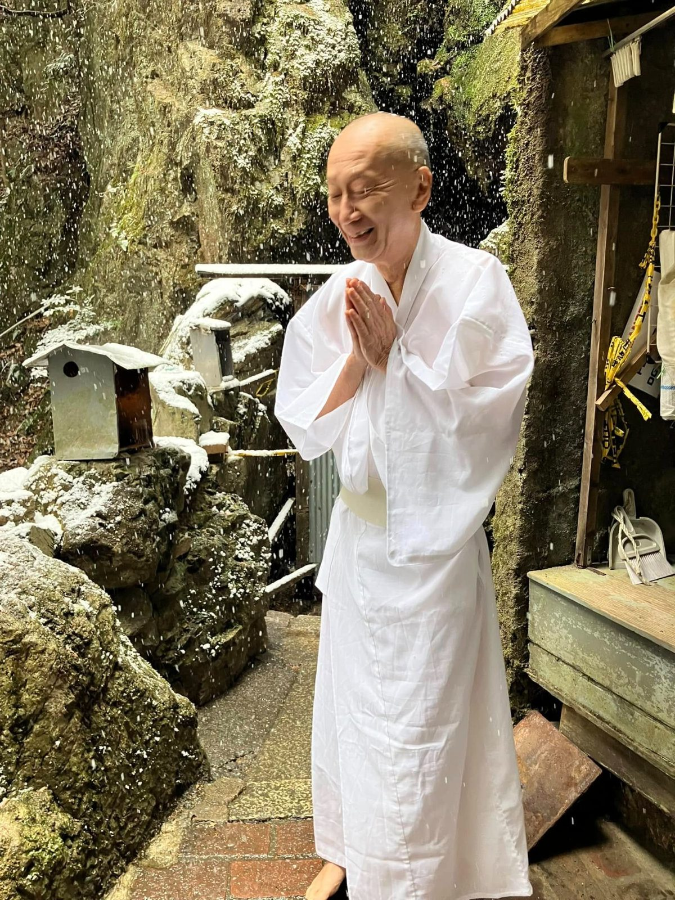
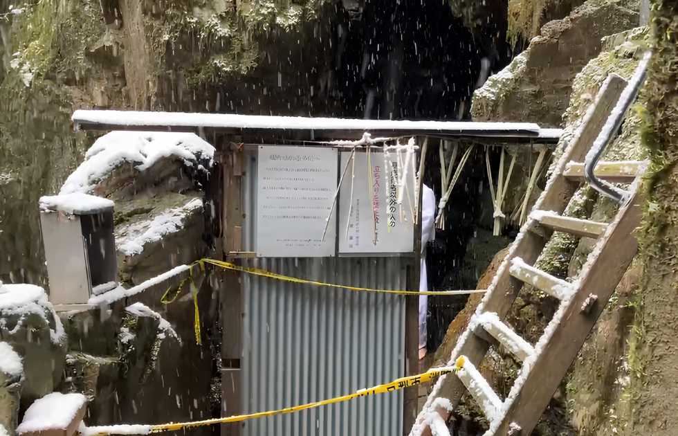
＊If you wish, we will later carry the paper bearing your wish into a waterfall purification ritual, praying for its fulfilment. We will also offer your written wish in a sacred Buddhist fire ritual, using the Flame of Hope.
02Let’s create Healing Water (Aiyu-Sui) infused with the Great Love of the Universe!
Place water on the stage or among the audience, and it will be transformed into “Aiyu-Sui”.
03Let’s fill the Flame of Hope with our prayers!
For a bright future for yourself.
For all living beings to live in peace.
And for a world where we each take responsibility for one another’s happiness.
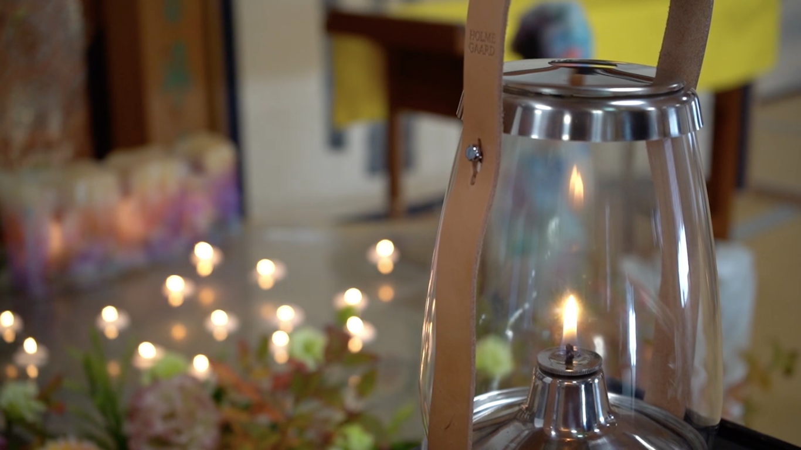
05ORIGINS
1
How Aminadabu Came into Being
Chief Priest of Wada Temple and Leader of AminadabuRyokyu Endo
For three years during my primary and middle school years, I lived in New York, delivering newspapers alongside the children of immigrants.
When I returned to Japan and entered high school, I struggled with life, repeatedly turning to self-harm, drugs and running away from home. Amid those destructive days, I suddenly experienced a “world of light” while performing music. Afterwards, seeking peace in my life, I began practising Buddhism.
Five years later, I found my body and mind melting into the overwhelming warmth and boundless love of the Great Spirit of the Universe. I lived with a sensation as though I were soaking in a hot spring all day long.
Ten years later, unable to contain my wish to share Great Love, I became a Buddhist priest. In time, I began setting Buddhist sutras to melodies and singing them with others, hoping to make it easier for people to begin practising. Departing from tradition required a resolve akin to leaping off a cliff.
Later, I returned to playing in a band and gradually developed a style in which performers and audiences sang mantras and danced together. This is how Aminadabu was born—a band carrying the tradition of Odori Nembutsu, or dancing Buddhist chanting, into the present day.
壱
2
From Venerable Ippen’s Dancing mantra chants to Aminadabu
Venerable Ippen (1239–1289) lived a life of yugyō—travelling from place to place without a permanent home.
Chanting the Amitabha mantra together with the people, he danced with them like a rave, sharing the joy of rebirth in the Pure Land, paradise in Buddhism.
His free and daring approach drew criticism from the Buddhist establishment of his time. Yet Odori Nembutsu—the Dancing mantra chanting—captured the hearts of ordinary people and grew into a vast cultural movement.
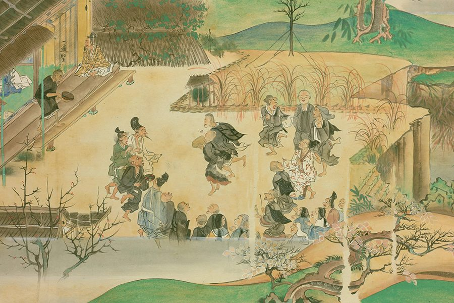
Ippen picture scroll (dancing people)
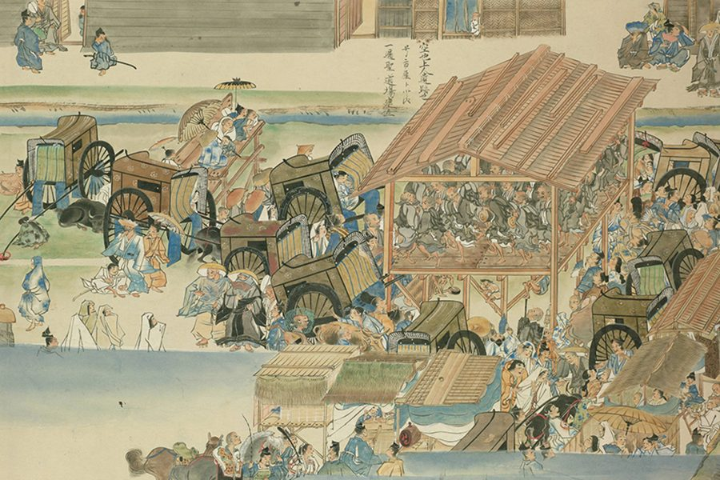
Ippen picture scroll
Carrying on this spirit, Aminadabu raises the Flame of Hope, transcending borders, religions and cultures as we chant mantras, pray and dance together with our audiences.
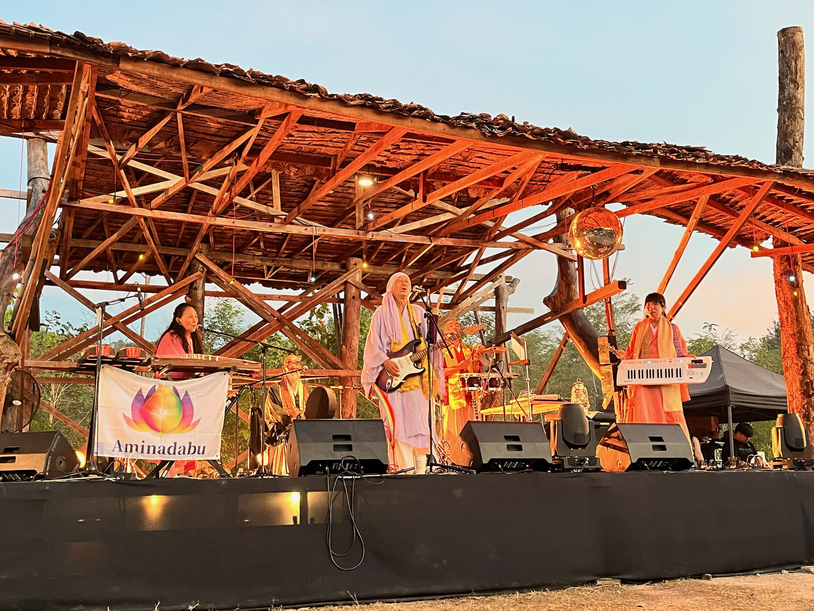
At Britain’s Glastonbury Festival, Mahatma Gandhi’s great-grandson joined us in singing.
弐
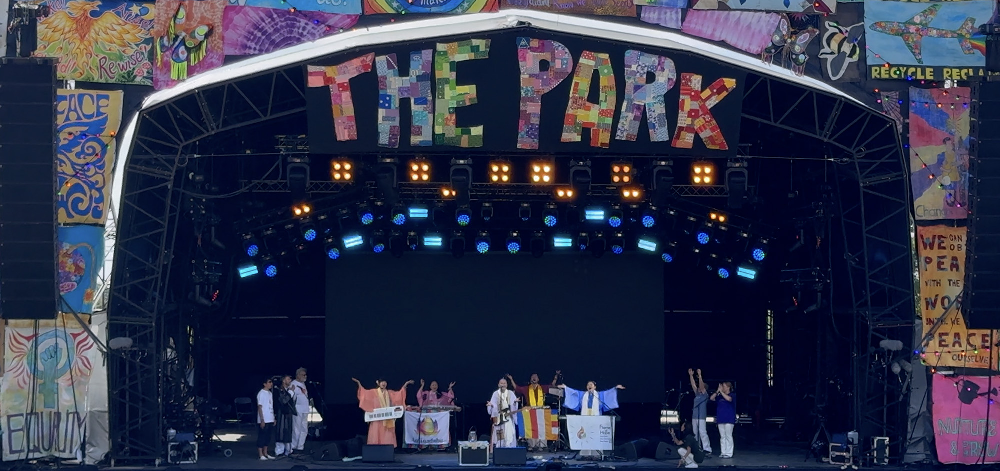
Across time, once again
With the spirit of odori-nenbutsu handed down across the ages, and with the “Flame of Hope” in hand, Aminadabu will keep walking the world.